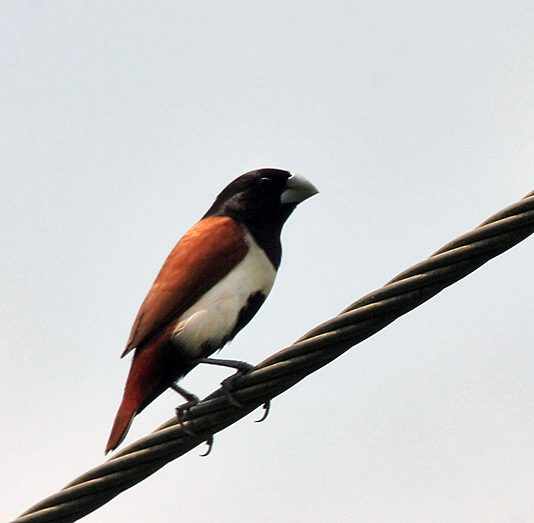

ट्राइकलर्ड मुनियाTricoloured Munia
Lonchura malacca · Estrildidae · BRD-0222

- Scientific name वैज्ञानिक नाम
- Lonchura malacca (Linnaeus, 1766)
- Family कुल
- Estrildidae
- Hindi हिंदी
- ट्राइकलर्ड मुनिया
- Local names स्थानीय नाम
- tricoloured munia, munia
- Status here यहाँ की स्थिति
- native
- Movement आवागमन
- Resident, here all year
- Known from कहाँ दर्ज
- Others have published records from the Basti–Ayodhya districts बस्ती–अयोध्या के ज़िलों से दूसरों के प्रकाशित अभिलेख
- IUCN IUCN
- LC
- Review समीक्षा
- audited and independently read
When to look कब देखें
Present all year. साल भर मौजूद।
Tell it apart from इनसे अलग पहचानें
ट्राइकलर्ड मुनिया / Tricoloured Munia
Lonchura malacca (Linnaeus, 1766) — Estrildidae
ट्राइकलर्ड मुनिया — यह छोटी, रंगीन चिड़िया पूर्वी उत्तर प्रदेश के घास के मैदानों और गेहूँ के खेतों में साल भर पाई जाती है। इसकी सबसे बड़ी पहचान इसका तीन रंगों का सिर है — सफ़ेद माथा, काली आँखों की पट्टी और लाल गाल (chestnut-red cheeks) — और इसकी हल्की भूरी पीठ और काला पेट। यह बहुत छोटी चिड़िया है जो झुंडों में रहती है और बीज खाती है।
Quick Identification त्वरित पहचान
| Feature | Description |
|---|---|
| Size | Small finch; 12–13 cm total length |
| Head | White face with black loral stripe; chestnut-red cheeks |
| Crown | White or pale; black markings |
| Back | Buff-brown or fawn |
| Wings | Brown; blackish flight feathers |
| Tail | Dark brown; short and rounded |
| Underparts | White or buff; black belly patch |
| Behaviour | Gregarious; feeds in flocks on grass seeds; feeds on ground |
Field tip: A small, colourful finch with a distinctive tri-coloured head (white face, black loral stripe, chestnut cheeks), fawn-brown back and black belly. Usually seen in small flocks feeding on grass seeds or grain. Call is a soft chip-chip given in flight.
हिंदी — कैसे पहचानें:
छोटी, रंगीन चिड़िया।
सफ़ेद, काली और लाल सिर।
भूरी पीठ; काला पेट।
झुंडों में रहती है।
Morphology आकारिकी
Biometrics:
| Measurement | Range |
|---|---|
| Total length | 120–130 mm |
| Wing (flattened chord) | 55–65 mm |
| Tail | 35–45 mm |
| Bill | 12–14 mm |
| Tarsus | 13–15 mm |
| Weight | 12–16 g |
Size: 12–13 cm long; wingspan 18–22 cm. Weight 12–16 g.
Plumage: Crown white or pale buff. Lores and eye-stripe black or dark brown. Cheeks bright chestnut-red. Ear coverts white. Throat white or buff. Back buff-brown or fawn. Rump buff. Wings brown with darker flight feathers. Tail dark brown, short and rounded. Underparts white on breast, with black or dark brown lower belly and undertail coverts.
Bill: Fairly stout, conical; grey or dark grey; adapted for seed-eating.
Legs and feet: Brown or flesh-coloured.
Eyes: Dark.
Sexes: Similar; males slightly brighter or darker on belly.
Vocalisations
- Call: Soft chip or chit notes given in flight and on the ground; very frequent and diagnostic.
- Song: Limited; mostly relies on calls.
- Flock calls: Continuous soft calling within flocks; produces a gentle background chatter.
हिंदी: नरम "चिप-चिप" आवाज़। झुंडों में लगातार बोलती है। कम गाती है।
Behaviour & Ecology व्यवहार और पारिस्थितिकता
Gregarious granivore: Highly social; feeds in flocks on grass seeds and grain. Feeds on the ground and on grass panicles.
Feeding: Primarily grass seeds and grain (rice, wheat). Also eats small insects and berries.
Feeding behaviour: Flocks move together across grasslands and fields, feeding on ripening seeds and fallen grain. Often seen hanging from seed heads.
Roosting: Communal roosts in reed beds or dense bushes; flocks gather at dusk.
Solitary nesting: Unlike many estrildids, builds own nest without help from helper birds. Monogamous pairs; male feeds female during incubation.
Territorial: Establish breeding territories but remain gregarious during non-breeding months.
हिंदी: झुंडों में रहता है। बीज खाता है। खेतों और मैदानों में दिखता है। रीड़ों में सोता है।
Life Cycle / Phenology जीवन चक्र
Resident: Year-round resident; breeds locally (April–September).
Breeding: Builds small cup nest of grass and plant fibres in grass tufts, bushes or low trees. Lays 4–6 white eggs.
Clutch: 4–6 white eggs.
Incubation: 12–14 days; female incubates, male feeds her.
Fledging: Chicks fledge in approximately 14–16 days. Two broods per year common.
Moult: Complete annual moult post-breeding.
हिंदी: साल भर यहाँ रहता है। अप्रैल से सितंबर तक प्रजनन करता है। घास में घोंसला बनाता है।
Host Plants or Prey आहार
Primary food items:
- Grass seeds (various species)
- Grain (rice, wheat, millet)
- Mustard seeds
- Small insects (particularly during breeding)
- Berries (occasionally)
Seeds obtained by gleaning from panicles and the ground; insects gleaned from vegetation.
हिंदी: घास के बीज खाता है। खेतों की अनाज़ भी खाता है। कीड़े भी निकालता है, खासकर प्रजनन के समय।
Predators / Natural Enemies शत्रु
- Raptors: Shikras and small falcons hunt flocking birds
- Snakes: Water snakes may predate on eggs and chicks
- Corvids: Crows predate on eggs
Agricultural / Human Relevance कृषि प्रासंगिकता
Pest or potential pest: Large flocks can cause significant damage to ripening grain crops, particularly rice and wheat. May be considered agricultural pest locally.
Seed dispersal: By consuming seeds and defecating at distant sites, may contribute to seed dispersal of some plants.
Caging: Popular cage bird in some parts of Asia due to attractive appearance; some wild trapping occurs.
Legal status: Protected under the Wildlife Protection Act 1972. Not hunted for food. Wild populations stable though some local trapping may occur for the cage-bird trade.
Expected Locally स्थानीय रूप से अपेक्षित
Not a field record. Written from published accounts for eastern Uttar Pradesh. No confirmed local sighting yet — if you have seen it, that is what the atlas needs.
अभी तक स्थानीय पुष्टि नहीं। यह विवरण प्रकाशित स्रोतों से है, किसी अवलोकन से नहीं।
GBIF holds published records from these districts. Expected year-round in grasslands, cultivated fields and scrub areas. More visible during grain ripening periods (November–February for wheat and rice). Flocks are conspicuous as they feed on grain and grass seeds. Most active during early morning and late afternoon. Numbers may increase during peak grain harvest when fallen grain becomes abundant. The first local record would be a photograph showing the distinctive tri-coloured head pattern and overall plumage, with place and date, submitted through the About page.
हिंदी: साल भर घास के मैदानों और खेतों में देखे जाने की उम्मीद है। अनाज़ के पकने के समय ज़्यादा दिखाई देते हैं। पहला रिकॉर्ड फोटोग्राफ के साथ तारीख़ और जगह दिखानी चाहिए।
Distribution वितरण
Global range: Indian subcontinent, Southeast Asia, southern China and Indonesia. Resident and partial migrant throughout.
In India: Widespread resident throughout the Indian peninsula; common in grassland and cultivated areas.
In Uttar Pradesh: Resident throughout the state; expected in grasslands and fields.
In Basti district / eastern UP: Year-round resident in grasslands, reed beds, grain fields and light scrub.
Research Questions शोध प्रश्न
- What is the detailed diet composition of tricoloured munias in relation to crop maturity and grain availability?
- How do flock sizes vary seasonally and what factors influence flock assembly?
- क्या बड़े झुंड फसलों को नुक़सान पहुँचाते हैं और कितना?
- What is the extent of local cage-bird trapping and its impact on wild populations?
- How do tricoloured munias interact with other granivorous bird species for food resources? (Can be studied through feeding observations.)
- क्या जलवायु परिवर्तन से इस चिड़िया की आबादी बदल रही है?
Similar Species मिलती-जुलती प्रजातियाँ
| Species | Key Difference | Hindi | Field Rule |
|---|---|---|---|
| White-rumped Munia (Lonchura striata) | White rump; different head pattern; darker overall | — | Tricoloured munia shows chestnut-red cheeks and white face; white-rumped is darker with white rump patch. |
| Spotted Munia (Lonchura punctulata) | Larger; spotted underparts; different head pattern | — | Tricoloured munia is smaller with distinctive tri-coloured head and unspotted underparts. |
Field rule: Tricoloured munia is uniquely identified by its white face with black loral stripe and bright chestnut-red cheeks. No other munia in the region shows this distinctive head pattern.
Taxonomy & Classification वर्गीकरण
Original description. Described by Linnaeus in 1766 in Systema Naturae (12th edition) as Loxia malacca. Type locality is Malacca, Malaysia.
Subspecies. Three subspecies; L. m. malacca occurs in India.
Family and order placement. Order Passeriformes; family Estrildidae (whydahs, Gouldian finches, munias and other estrildid finches). Genus Lonchura comprises the munias of Africa, Asia and Australasia.
Phylogenetic notes. Closely related to white-rumped munia (L. striata) and other Asian munias.
IUCN status rationale. Least Concern globally. Widespread and common resident throughout the Indian subcontinent and Southeast Asia. Adaptable to human-modified grasslands and cultivated areas.
हिंदी: भारत में सामान्य चिड़िया है। साल भर मैदानों में पाई जाती है। कानूनी सुरक्षा में है।
Photo Gallery फोटो गैलरी
No photos yet — add field photos to media/species/tricoloured_munia/ and run node scripts/sync_photos.js.
Wanted photos:
- Adult showing distinctive head pattern
- Flock feeding on grass seeds
- Close-up of head showing tri-coloured pattern
- Pair during breeding season
References संदर्भ
- Linnaeus, C. (1766). Systema Naturae per Regna Tria Naturae (12th edn). Laurentii Salvii, Holmiae. Vol. 1, p. 320.
- Ali, S. & Ripley, S. D. (1987). Handbook of the Birds of India and Pakistan. Vol. 6 (Crows to Finches). Oxford University Press, Delhi. Pp. 263–266.
- Grimmett, R., Inskipp, C. & Inskipp, T. (2011). Birds of the Indian Subcontinent (2nd edn). Oxford University Press, Delhi. Pp. 459.
- Rasmussen, P. C. & Anderton, J. C. (2012). Birds of South Asia: the Ripley Guide (2nd edn). Lynx Edicions, Barcelona. Vol. 2, Pp. 718.
- GBIF Occurrence Data — Lonchura malacca, India.
- IUCN Red List (2023). Lonchura malacca — BirdLife International. IUCN, Cambridge. Status: Least Concern.
Source file: species/fauna/birds/tricoloured_munia.md